The Science and Technology of Micro-machines
LABORATORY 1: The Micro-Cantilever
Authors: A. K. Henning and C. G. Levey
Revision: March, 1995
Purpose and Description:
This laboratory presents the fundamental operations in most electromechanical devices created using the techniques of surface micro-machining.
In particular, a number of critical structures will be built, using an existing set of photolithographic masks. The central device will be the micro-cantilever, though other devices will also be built.
Your will work in groups of approximately four. Each group will fabricate several silicon wafers. Some experimental variations will be utilized, to demonstrate how the behavior of micro-machines depends upon the properties of the constituent materials, which are determined by their material and physical structure.
Process Flow Representation (PFR[1]):
Language is frequently the major barrier to technological understanding. Recall the general description of process steps from class:
*Etch A step which removes material
*Deposit A step which adds material
*Implant A step which implants dopants or defects
*Diffusion A step which heats material, in a gaseous, liquid or solid ambient
atmosphere
*Exposure A step which exposes a photoresist layer to light
General Step Specific Step Description Monitor/Measurement
1. Initialization: Starting material Four-point probe/Resistivity
100mm <100> silicon
2. Etch: RCA Clean[2]
3. Diffusion: Wet Oxidation (sacrificial) Ellipsometer/Film thickness
4. Photolithography
4a. Deposit: Spin on photoresist Ellipsometer/Film thickness
Microscope/Visual inspection
4b. Diffusion: Pre-exposure bake photoresist Time, Temperature
4c. Exposure: Anchor Hole Definition Time, Light Intensity
4d. Etch: Develop photoresist Microscope/Visual inspection
4e. Diffusion: Post-exposure bake photoresist Time, Temperature
5. Etch: Anchor Hole Cut Time, Temperature
Microscope/Visual inspection
6. Etch: Photoresist strip Time, Temperature
Microscope/Visual inspection
7. Deposition: Polysilicon Deposition Ellipsometer/Film thickness
Microscope/Visual inspection
8a. Diffusion: Polysilicon Anneal Time, Temperature
Microscope/Visual inspection
8b. Diffusion: Dry Oxidation (hard mask) Time, Temperature
Microscope/Visual inspection
9. Photolithography
9a. Deposition: Spin on photoresist Ellipsometer/Film thickness
Microscope/Visual inspection
9b. Diffusion: Pre-exposure bake photoresist Time, Temperature
9c. Exposure: Cantilever Definition Time, Light Intensity
9d. Etch: Develop photoresist Microscope/Visual inspection
9e. Diffusion: Post-exposure bake photoresist Time, Temperature
10a. Etch: Oxide mask etch Time, Temperature
Microscope/Visual inspection
11. Etch: Photoresist strip Time, Temperature
Microscope/Visual inspection
12. Etch: Polysilicon etch Time, Temperature
Microscope/Visual inspection
13. Dice wafers
14. Etch: Oxide Release Time, Temperature
Microscope/Visual inspection
Detailed Step Description (including cross-section [side view] and plan [top] view pictures):
1. Initialization: Starting material
3" <100> silicon
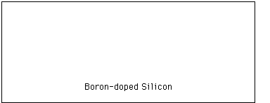
2. Etch: RCA Clean
On a microscopic scale, the three steps of this clean (developed by Werner Kern at the RCA Corporation in the 1960's) remove organics, metallics, and residual oxide.
3. Diffusion: Wet Oxidation
(sacrificial)
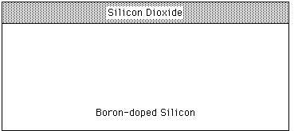
4a. Deposit: Spin on photoresist
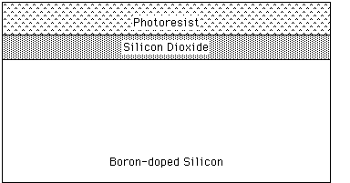
4b. Diffusion: Pre-exposure bake
photoresist
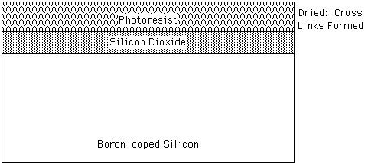
4c. Exposure: Anchor Hole
Definition
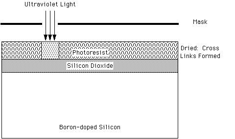
4d. Etch: Develop photoresist
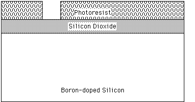
4e. Diffusion: Post-exposure bake
photoresist
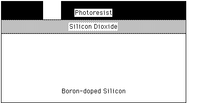
5. Etch: Anchor Hole Cut
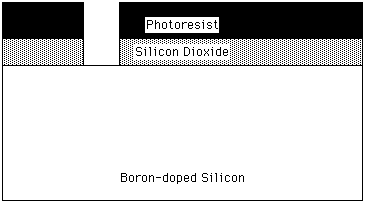
6. Etch: Photoresist strip
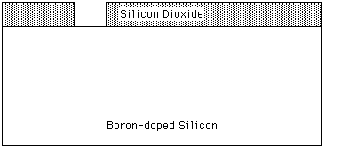
7. Deposition: Polysilicon
Deposition
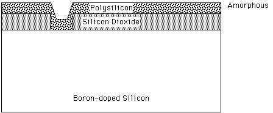
8a. Diffusion: Polysilicon Anneal
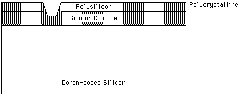
8b. Diffusion: Dry Oxidation
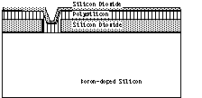
9a. Deposit: Spin on
photoresist
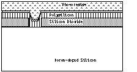
9b. Diffusion: Pre-exposure
bake photoresist
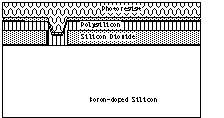
9c. Exposure:Cantilever Definition
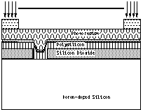
9d. Etch: Develop
photoresist
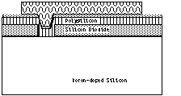
9e. Diffusion: Post-exposure bake
photoresist
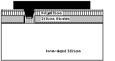
10. Etch: Oxide mask etch
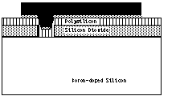
11. Etch: Photoresist strip
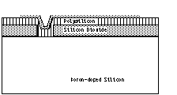
12. Etch: Polysilicon etch
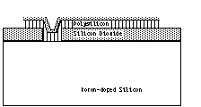
13. Dice wafers
14. Etch: Oxide Release
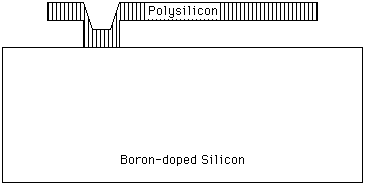
13. PLAN VIEW OF CANTILEVER:
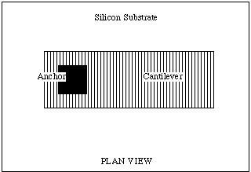
Structure Catalog (Mask Road Map):
(Under Construction)
Guckel Rings
Cantilevers
In-Process Measurements and Post-Process Characterization:
(Under Construction)
Four-point probe resistivity measurement
Ellipsometry
Thin-film stress
Scanning Electron Microscopy
Pre-Lab Problems:
These problems must be turned in individually, prior to beginning this laboratory. Some problems will be assigned as a part of the regular homework.
1) Given an oxidation temperature of 1000 deg.C: How long must the Wet Oxidation diffusion last, in order to obtain 2 um of silicon dioxide?
2) Using L-Edit, design a device of your own for inclusion in the fabrication process. Describe the intended behavior of the device.
Laboratory Reports:
Laboratories will be done in groups of four. An Interim Lab Report will be turned in by the Lab Group at the conclusion of the processing portion of the lab. Toward the end of the course, following additional characterization of the fabricated structures, a Final Lab Report will be turned in, again as a group. See the document, "General Description of Lab Reports" for information on Lab Report format and expectations.
You are visitor number